Manual de Usuario Completo
Las 11 guías del sistema en un solo documento — pensado para imprimir o buscar con Ctrl+F. Para navegar módulo por módulo con vista de tarjetas, usá el índice.
Punto de Venta (POS) — Guía paso a paso
Cómo armar una venta, cobrarla con uno o varios medios de pago, dejarla en espera para más tarde, y qué hacer si te equivocás — con diagramas de flujo y capturas reales de la pantalla.
0 · Cómo funciona (las 3 zonas)
La pantalla de venta tiene tres zonas: búsqueda/carga de productos arriba, el detalle de la venta en curso en el medio, y los totales y acciones abajo. Nada se guarda hasta que confirmás la venta en el modal final — podés armar y deshacer sin miedo.
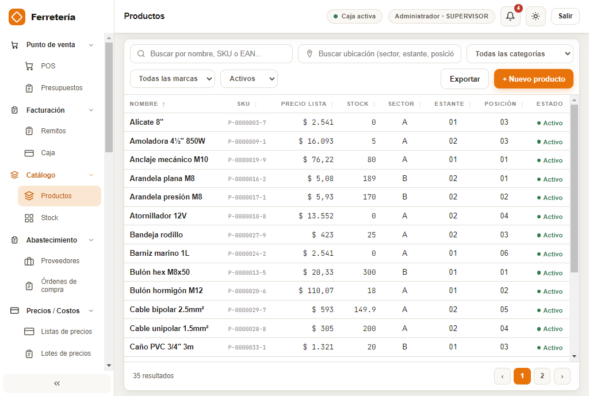
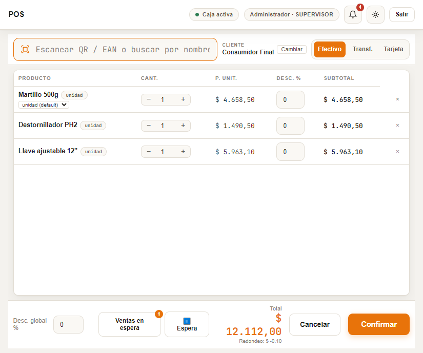
1 · Buscar y agregar productos
Escaneá o escribí
Con el lector QR/EAN escaneá el producto, o escribí su nombre o SKU en el buscador (Escanear QR / EAN o buscar por nombre...).
Elegí el resultado
Aparece un desplegable con las coincidencias. Al hacer clic en una, se agrega como línea nueva con cantidad 1.
Repetí para cada ítem
Si volvés a buscar el mismo producto, se suma a la línea existente en vez de duplicarla.
2 · Cantidades, unidades y descuentos de línea
| Campo | Qué hace |
|---|---|
| Cant. | Cantidad de la línea. Los botones − / + suman o restan de a uno; si el producto permite fracción, también podés escribir un decimal (ej. 2,5). |
| Selector de unidad | Si el producto tiene más de una presentación cargada (ej. metro y rollo), un desplegable debajo del nombre te deja elegir con cuál vender esa línea. El precio y el descuento de stock se recalculan solos según la presentación elegida. |
| Desc. % | Descuento manual sobre esa línea puntual, en porcentaje. |
| × | Saca la línea completa de la venta. |
3 · Descuento global
El campo Desc. global %, abajo a la izquierda, aplica un descuento adicional sobre el total de la venta — se suma al de cada línea, no lo reemplaza.
4 · Confirmar la venta y elegir medio de pago
Presioná Confirmar
Se abre el modal Confirmar venta con el total de productos.
Elegí el medio de pago
Desplegable con: Efectivo, Tarjeta, Transferencia, Cuenta corriente y Cheque.
Cargá el monto y confirmá
Ingresá cuánto cubre ese medio y presioná Confirmar. Recién ahí la venta queda registrada y se descuenta el stock.
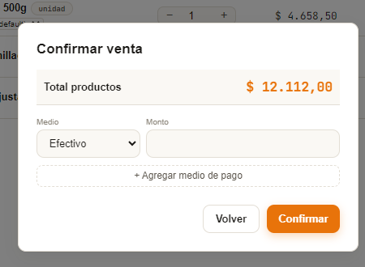
⚠️ Se necesita la caja abierta
Si no hay una caja abierta para tu turno, el sistema no deja confirmar la venta. Abrí la caja primero desde Caja.
Cliente “Consumidor Final” por defecto
Toda venta arranca con el cliente Consumidor Final. Si necesitás asociarla a un cliente puntual (por ejemplo para cobrar en cuenta corriente), usá el botón Cambiar junto al nombre del cliente, antes de confirmar.
5 · Pagos combinados (mixtos)
Podés cobrar una misma venta con varios medios de pago — por ejemplo, una parte en efectivo y otra con tarjeta.
Agregá una línea por cada medio
En el modal, usá + Agregar medio de pago tantas veces como medios necesites.
Cargá el monto de cada una
La suma de todas las líneas tiene que cubrir el total de la venta.
Recargo de tarjeta (opcional)
Si el medio es Tarjeta, aparece un campo extra de % de recargo. El sistema muestra cuánto es ese recargo en pesos al costado de la línea.
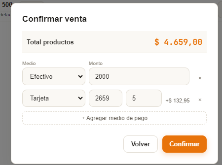
⛔ El recargo NO se suma al total de la venta
Es informativo: te dice cuánto cobrarle de más al cliente por pagar con esa tarjeta, pero el total registrado de la venta no cambia por el recargo. Es una decisión de diseño del sistema, no un error.
6 · Vuelto y redondeo
El total de la venta se redondea siempre al peso entero más cercano (la diferencia queda registrada como ajuste de redondeo; las líneas conservan sus centavos exactos). Por eso vas a ver un renglón Redondeo: ±$0,XX junto al total.
Si pagás una parte con efectivo y el monto ingresado supera lo que falta cubrir, el sistema calcula el vuelto automáticamente (también redondeado al peso).
7 · Ventas en espera
Si un cliente deja la compra para más tarde:
Presioná Espera
Con la venta armada, podés ponerle un alias opcional (ej. nombre del cliente o número de mesa) para reconocerla después.
Queda guardada, sin tocar nada
No afecta el stock ni la caja hasta que se confirme de verdad.
Retomala o descartala
Abrí el panel con el botón Ventas en espera (muestra un contador). Ahí podés Retomar (vuelve al carrito para seguir o confirmar) o Descartar (se pierde, no registra nada).
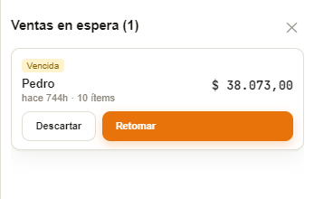
¿Qué significa “Vencida”?
Pasadas 24 horas sin retomarla (valor configurable por parámetro del sistema), la venta en espera se marca como Vencida. Es solo una alerta visual para que el equipo la revise — no se borra ni se cancela sola, sigue disponible para retomar o descartar.
8 · Cancelar una venta en curso
Si te equivocaste armando la venta y querés empezar de nuevo (distinto de “Espera”, que la guarda):
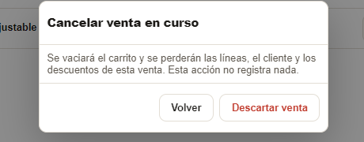
9 · Diagrama: flujo completo de una venta
10 · Dudas frecuentes
¿El recargo de tarjeta se suma al total de la venta?
Una venta en espera quedó marcada “Vencida”. ¿Se cancela sola?
¿Puedo vender un producto sin stock disponible?
Cancelé una venta en curso por error. ¿Se guardó algo?
¿Necesito la caja abierta para vender?
¿Puedo cambiar el cliente durante la venta?
¿Por qué el total termina en $0 o $50 y no coincide con la suma de las líneas?
¿El producto se puede vender por metro y también por rollo (o caja, etc.)?
Caja — Guía paso a paso
Cómo abrir el turno, registrar ingresos y egresos que no son ventas, y cerrar la caja con el arqueo — incluida la autorización del Supervisor cuando la diferencia es grande.
0 · Cómo funciona (un turno = una caja)
Cada vez que alguien empieza a trabajar, abre una caja con un fondo inicial en efectivo. Desde ese momento, todas las ventas del POS y los movimientos manuales (retiros, gastos, aportes) quedan asociados a esa caja, hasta que se cierra con un arqueo. No se puede vender sin una caja abierta.
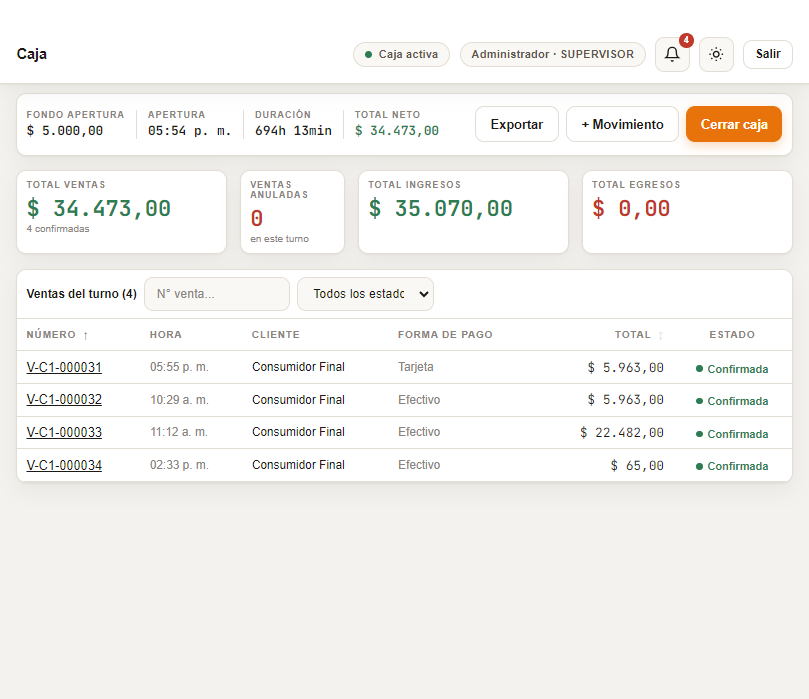
1 · Abrir la caja
Si no hay una caja abierta para tu sesión, el sistema te pide abrirla antes de dejarte hacer cualquier otra cosa en el POS.
Cargá el monto inicial
El efectivo con el que arrancás el turno (obligatorio, tiene que ser mayor a $0).
Observaciones (opcional)
Cualquier nota que quieras dejar sobre el inicio del turno.
Presioná Abrir caja
Desde ahí el sistema empieza a contar la duración del turno y a acumular ventas y movimientos.
Cada usuario abre su propia caja para su turno; un Supervisor puede cerrar la de cualquiera, un Operador solo la suya (ver autorización).
2 · Durante el turno
Mientras la caja está abierta, la pantalla Caja muestra en vivo: total de ventas, ventas anuladas, total de ingresos, total de egresos, y el detalle de cada venta del turno. Las ventas se registran automáticamente ahí a medida que se confirman en el POS — no hace falta hacer nada manual por cada venta.
3 · Registrar un movimiento
Para todo lo que no es una venta pero mueve el efectivo de la caja: un retiro, un gasto del local, o un aporte extra.
Presioná + Movimiento
Elegí Tipo y Motivo
Tipo: Ingreso o Egreso. Motivo: Retiro, Gasto o Aporte.
Cargá el monto, la forma de pago y confirmá
Forma de pago: Efectivo, Transferencia o Tarjeta. Las observaciones son opcionales.
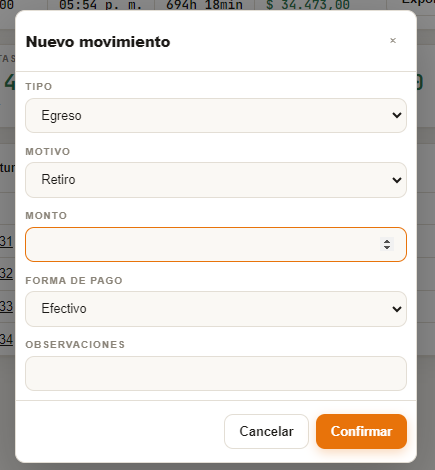
¿Por qué solo Retiro, Gasto y Aporte?
Son los únicos motivos que carga una persona a mano. Los demás motivos que vas a ver en el historial de movimientos (venta, cobro_cta_cte, pago_proveedor) los genera el sistema solo, desde el POS, el cobro de cuenta corriente o el pago a un proveedor — no hace falta (ni se puede) cargarlos manualmente acá.
4 · Cerrar caja y hacer el arqueo
El arqueo compara el efectivo que el sistema espera encontrar contra el efectivo que contás a mano.
Presioná Cerrar caja
Ves el resumen de ventas del turno y el desglose por medio de pago.
Contá el efectivo real
Cargalo en Efectivo declarado. El arqueo cuenta solo el efectivo — tarjeta, transferencia y demás ya quedaron registrados en su medio, sin necesidad de contarlos a mano.
Revisá la diferencia y confirmá
El sistema calcula el Sobrante o Faltante contra el efectivo esperado. Agregá observaciones si hace falta y confirmá el cierre.
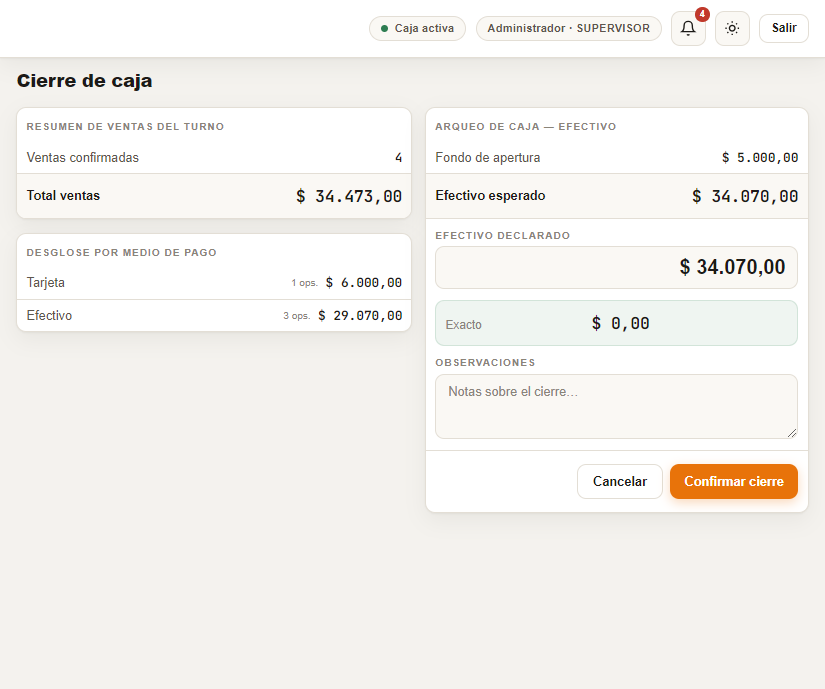
5 · Diferencias y autorización del Supervisor
Si lo que declarás se aleja mucho de lo esperado (por encima de un umbral configurable del sistema), cerrar la caja deja de ser algo que un Operador pueda hacer solo.
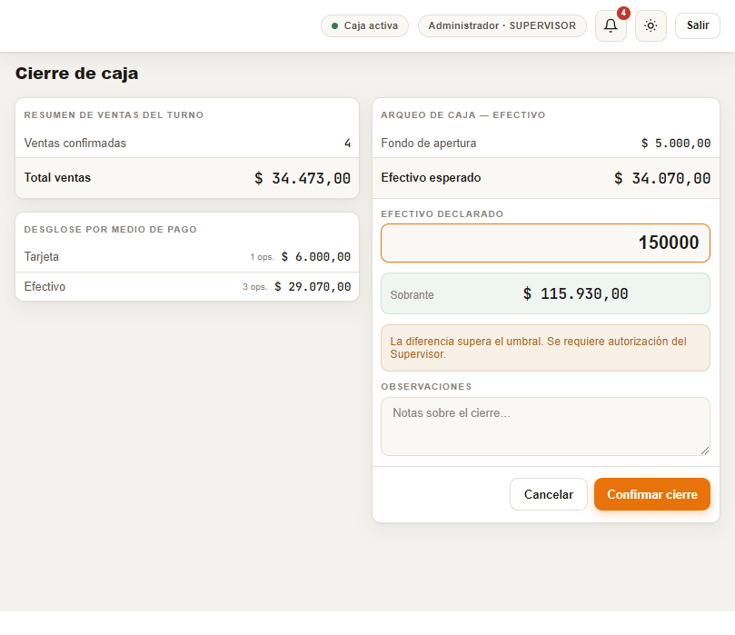
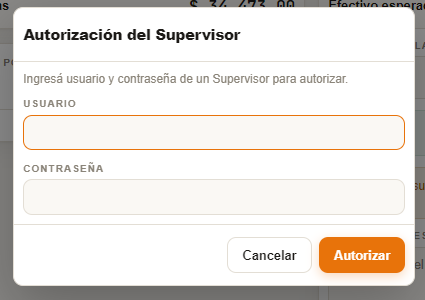
⚠️ Sin autorización, no se cierra
Un Operador puede contar y declarar el efectivo, pero si la diferencia supera el umbral, necesita que un Supervisor escriba su usuario y contraseña en ese momento para que el cierre se registre. Queda guardado quién autorizó.
6 · Diagrama: ciclo de vida de un turno de caja
7 · Dudas frecuentes
¿Puedo vender si no abrí la caja?
¿El arqueo cuenta las ventas con tarjeta o transferencia?
¿Qué pasa si la diferencia es chica?
¿Puedo cargar un movimiento con motivo “venta”?
Un Operador, ¿puede cerrar la caja de otro empleado?
Presupuestos y Remitos — Guía paso a paso
Cómo cotizarle a un cliente sin comprometer stock, convertir ese presupuesto en una venta real, y generar el comprobante de entrega cuando la mercadería sale del local — con diagramas y capturas reales.
0 · Cómo funciona
| Presupuesto | Remito | |
|---|---|---|
| Qué es | Una cotización para un cliente | Comprobante de que se entregó mercadería |
| Nace de | Cero — se arma como una mini-venta | Una venta ya confirmada |
| ¿Compromete stock? | No | No — solo documenta la entrega |
| ¿Tiene valor fiscal? | No | No |
| Termina en | Se convierte en una venta real (o vence) | Queda conformado cuando el cliente lo recibe |
Un presupuesto no reserva nada: podés cotizar tranquilo aunque el stock cambie después. Un remito, en cambio, parte siempre de una venta ya confirmada — es la forma de dejar constancia de qué se entregó, cuándo, y quién lo recibió, sin volver a tocar precios ni stock.
1 · Crear un presupuesto
Desde Presupuestos → + Nuevo presupuesto: es prácticamente un mini-POS sin cobro.
Elegí el cliente
Opcional — si no elegís ninguno, queda a nombre de Consumidor Final.
Buscá y agregá productos
Cada línea admite cantidad y descuento individual; además hay un descuento global para todo el presupuesto.
Guardá como borrador
Podés seguir editándolo — cliente, líneas, cantidades — mientras siga en borrador.
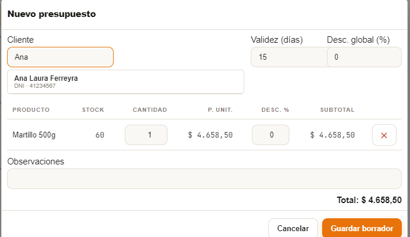
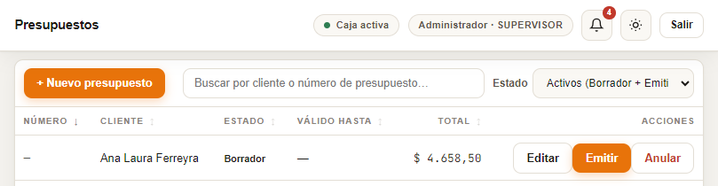
2 · Emitir el presupuesto
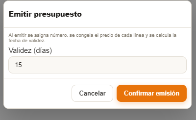
⚠️ Emitir es un punto sin retorno para los precios
Al emitir, el sistema le asigna número, congela el precio de cada línea (aunque después cambien las listas de precio, este presupuesto conserva los valores del día que se emitió) y calcula la fecha de validez según los días indicados.
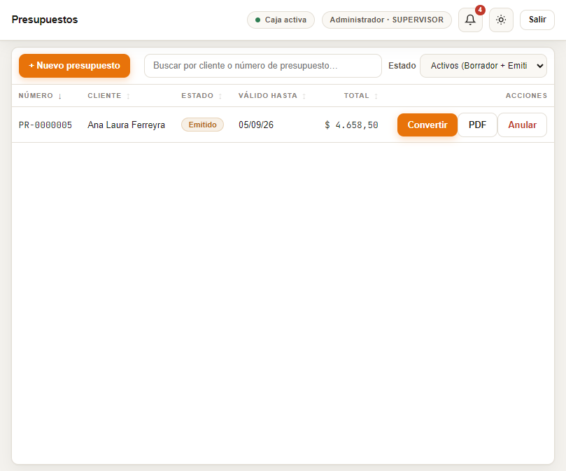
PR-0000005, válido hasta una fecha concreta, y los botones Convertir / PDF / Anular.Si se pasa la fecha de validez sin convertirse, el presupuesto pasa solo a estado Vencido — pero igual se puede convertir si el cliente vuelve y todavía sirve.
3 · Convertir a venta
El botón Convertir te lleva directo al POS con el carrito ya cargado con las líneas del presupuesto. Desde ahí es una venta común: podés seguir editando el carrito si hace falta, elegir medio de pago y confirmar.
El total de la venta puede no coincidir con el cotizado
Si al convertir se edita el carrito (se saca o se agrega algo), el total final de la venta va a diferir del presupuesto original — el sistema lo señala en el detalle del presupuesto convertido, sin ocultar la diferencia.
4 · Generar un remito
Se genera siempre desde una venta ya confirmada. Abrí la venta (por ejemplo desde Caja → Ventas del turno) y usá Generar remito.
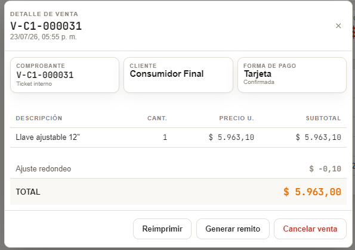
Elegí cuánto entregar de cada línea
El sistema te muestra lo vendido, lo entregado hasta ahora y lo pendiente — podés remitir menos de lo pendiente si la entrega es parcial.
Domicilio de entrega y transportista
Ambos obligatorios. El domicilio viene precargado con el del cliente si lo tiene cargado.
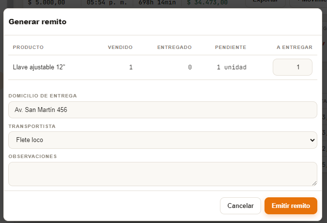
5 · Conformar la entrega
Cuando el cliente recibe la mercadería, se conforma el remito con el nombre de quien la recibió.
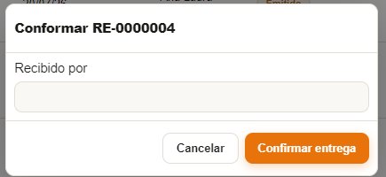
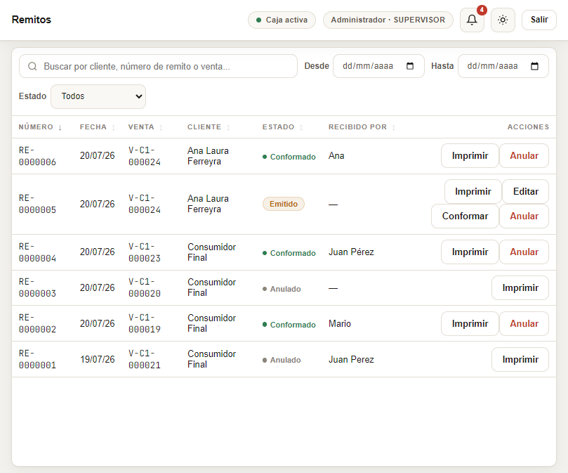
⛔ Anular un remito no toca el stock
Anular libera las cantidades entregadas — vuelven a quedar pendientes para un remito futuro — pero no genera ningún movimiento de stock. Tiene sentido: el remito nunca movió stock al emitirse, así que anularlo tampoco tiene nada que revertir ahí.
6 · Transportistas
Catálogo simple de fleteros/transportistas, en Configuración → Transportistas. Solo datos de contacto — no tienen relación fiscal con la ferretería, porque no le facturan nada.
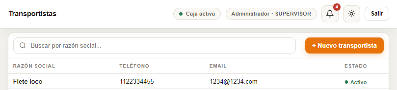
7 · Diagramas: ciclo de vida
8 · Dudas frecuentes
¿Un presupuesto reserva el stock de los productos cotizados?
Cambié los precios de lista después de emitir un presupuesto. ¿Se actualiza solo?
¿Puedo remitir menos de lo que se vendió?
¿El remito reemplaza a la factura?
¿Puedo generar un remito de una venta que todavía no confirmé?
Anulé un remito por error. ¿Se puede deshacer?
Clientes y Cuenta Corriente — Guía paso a paso
Cómo dar de alta un cliente, habilitarle cuenta corriente con límite de crédito, y registrar sus cobros — con diagrama de flujo y capturas reales.
0 · Cómo funciona
No todo cliente tiene cuenta corriente — es una casilla que se activa por cliente. Una vez habilitada, cada venta a crédito le suma saldo (lo que debe) automáticamente, y cada cobro se lo resta. El límite de crédito es solo una alerta visual — $0 o vacío significa sin límite.
1 · Dar de alta un cliente
Identificación
Tipo y número de documento, nombre y apellido (obligatorios), nombre de fantasía opcional, condición fiscal.
Contacto y domicilio
Ambos opcionales, salvo que quieras usarlos después para remitos.
Habilitar cuenta corriente
Checkbox al final del formulario — sin marcarlo, el cliente no puede comprar "fiado" en el POS.
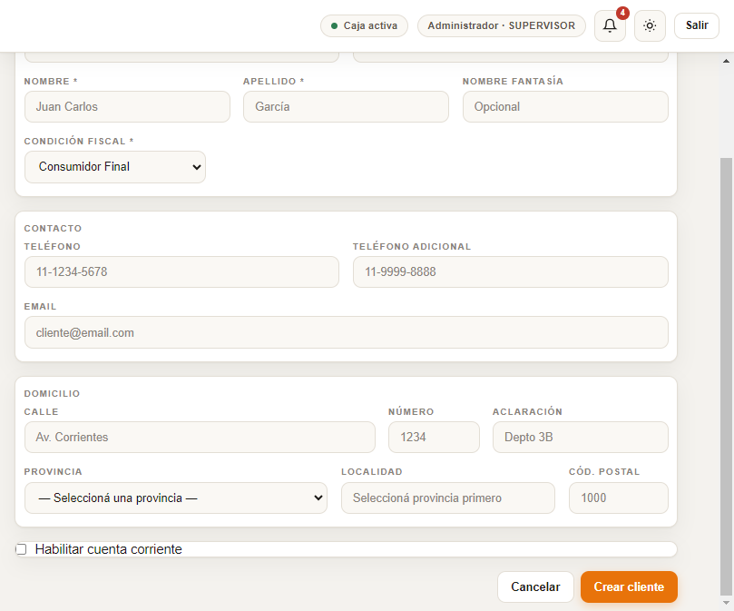
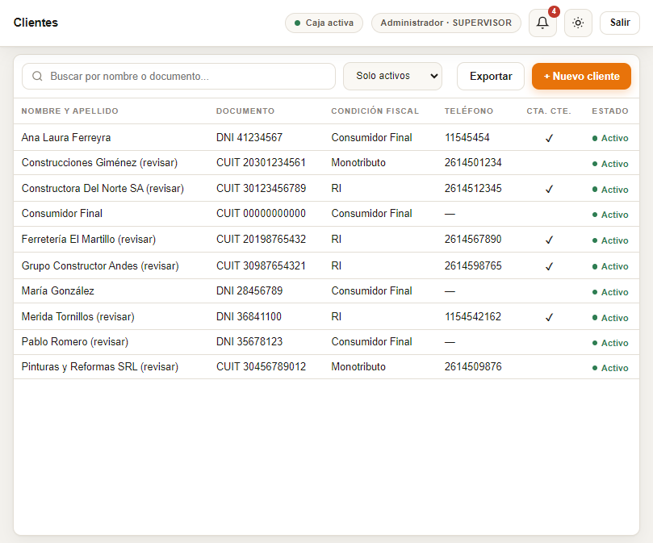
2 · La ficha del cliente
Si el cliente tiene cuenta corriente habilitada, su ficha muestra el resumen — saldo, límite, estado — con accesos directos para cobrar o ver el detalle completo.
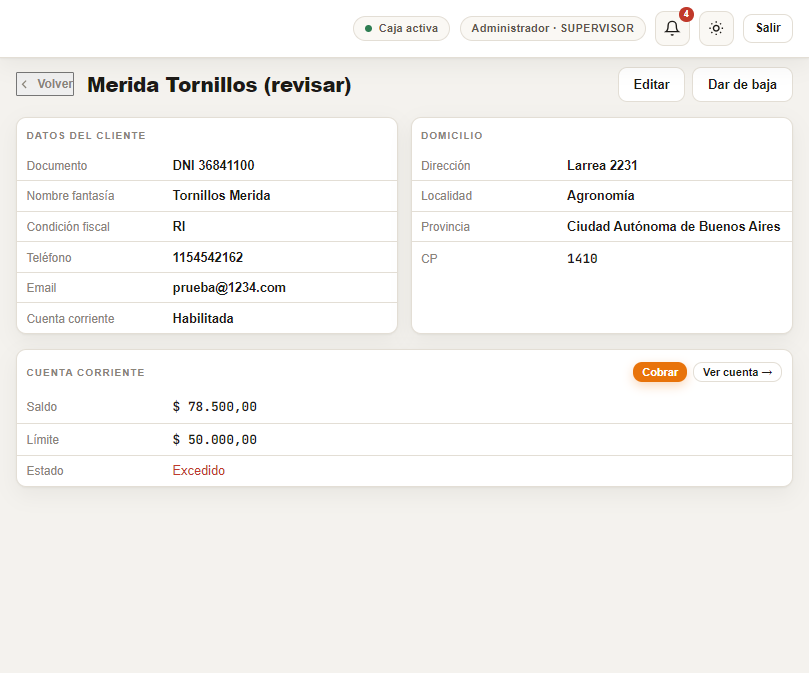
3 · Listado de cuentas corrientes
Desde Clientes → Cuentas corrientes ves todas las cuentas de un vistazo, con el total en deuda y a favor del negocio.
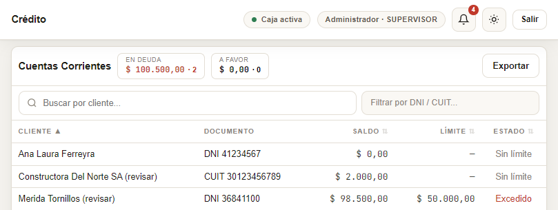
4 · Ver una cuenta: saldo, límite y movimientos
El detalle de una cuenta muestra el saldo actual, el límite (editable ahí mismo con el lápiz), y el libro de movimientos completo — cada venta a crédito, cada cobro, con su saldo resultante.
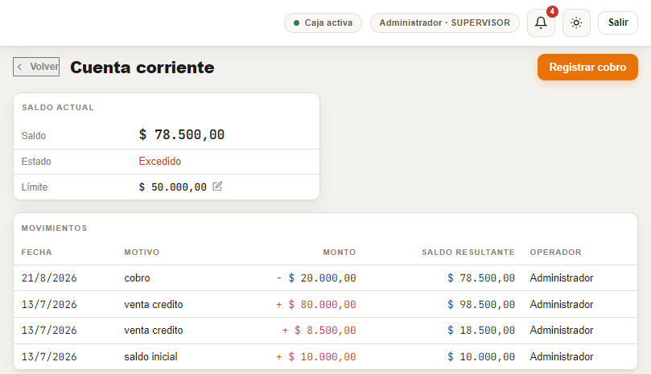
5 · Registrar un cobro
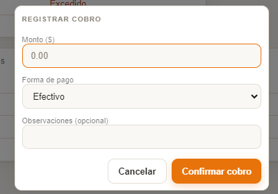
⚠️ Cobrar en efectivo necesita caja abierta
Si elegís Efectivo, el cobro pasa a formar parte de la caja del turno (movimiento de tipo cobro cuenta corriente) — así que hace falta tener una caja abierta para registrarlo. Con Transferencia no hace falta.
6 · Diagrama: ciclo de la cuenta corriente
7 · Dudas frecuentes
¿Qué pasa si el saldo queda "Excedido"?
¿Qué significa límite "Sin límite"?
Un cliente pagó de más. ¿Qué pasa con la diferencia?
¿Puedo cobrar en cuenta corriente sin tener la caja abierta?
¿Se puede editar o borrar un movimiento de cuenta corriente?
Catálogo de Productos — Guía paso a paso
Cómo dar de alta un producto, entender su ficha, venderlo en más de una presentación (metro/rollo, unidad/caja, etc.) e imprimirle la etiqueta — con diagramas y capturas reales.
0 · Cómo funciona
Cada producto tiene un SKU único que el sistema asigna solo (formato P-NNNNNNN-D) — es la identidad interna, no lo elegís vos. Además puede tener un código de barras (EAN/GTIN) del fabricante, opcional. El QR y el código de barras que salen impresos en la etiqueta se generan a partir del SKU en el momento de imprimir — no son datos separados que haya que cargar.
Reglas que no cambian
- Un producto siempre pertenece a una categoría (obligatoria). La marca es opcional.
- El stock nunca se edita directamente: todo cambio queda registrado como un movimiento (entrada, ajuste, merma).
- Un producto no se borra: se desactiva, para no perder el historial de ventas y stock que ya tiene.
1 · Listado y búsqueda
Desde Catálogo → Productos podés buscar por nombre, SKU o EAN, filtrar por ubicación, categoría, marca o estado, y exportar el listado.
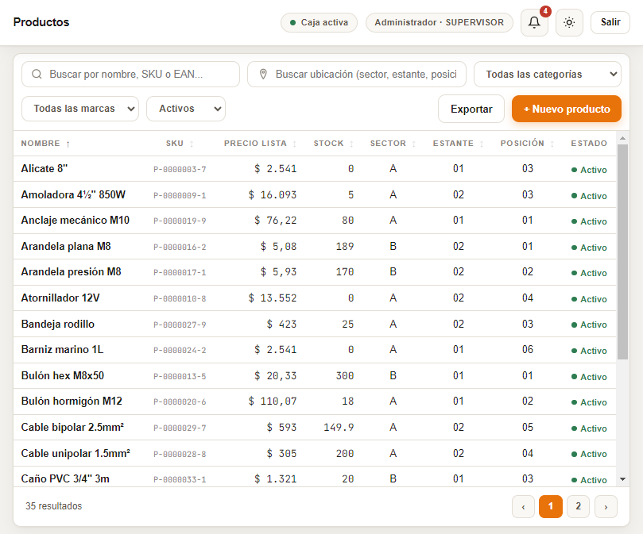
2 · Dar de alta un producto
Datos básicos
Nombre corto (obligatorio), nombre largo, descripción técnica, categoría (obligatoria) y marca (opcional).
Precio y unidades
Precio de venta de lista (IVA incluido), impuesto, unidad de venta (obligatoria — es la unidad en la que se lleva el stock), unidad de compra y factor de conversión entre ambas.
Stock y ubicación
Stock mínimo/máximo, ubicación en depósito, código EAN/barcode (opcional), si permite fracción (para vender cantidades con decimales) y si queda activo.
Crear producto
El sistema le asigna el SKU automáticamente.
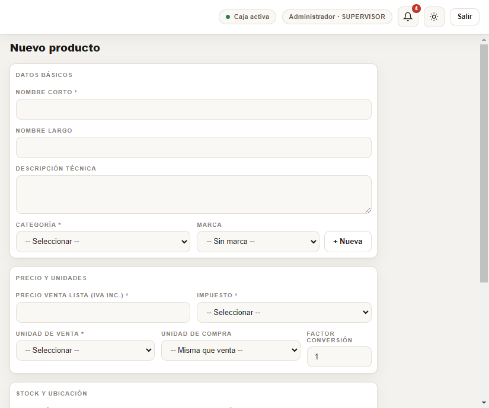
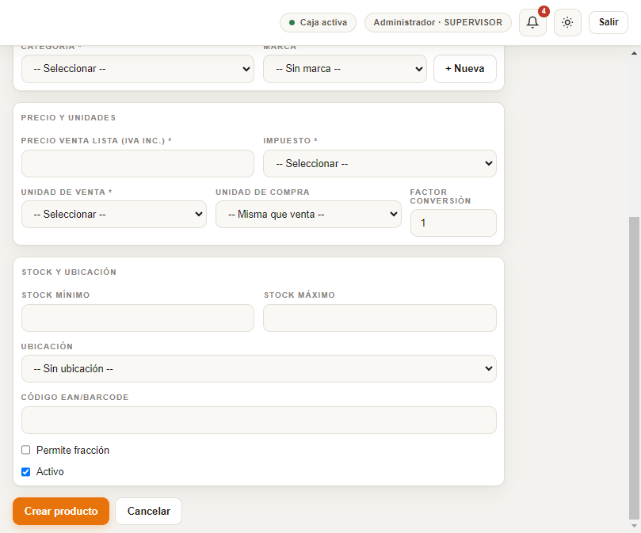
⚠️ No confundas “Unidad de compra” con “Presentaciones”
El campo Unidad de compra + Factor conversión del alta es para el caso simple: comprás en una unidad distinta a la que vendés (ej. comprás por caja, vendés por unidad), con un solo factor fijo. Si necesitás que el mostrador pueda vender el mismo producto de varias formas distintas (por ejemplo metro y rollo, ambas elegibles en el POS), esa es otra herramienta — ver Vender en más de una presentación.
3 · Categoría, marca y unidad
Se administran desde Configuración, como catálogos simples reutilizables por todos los productos.
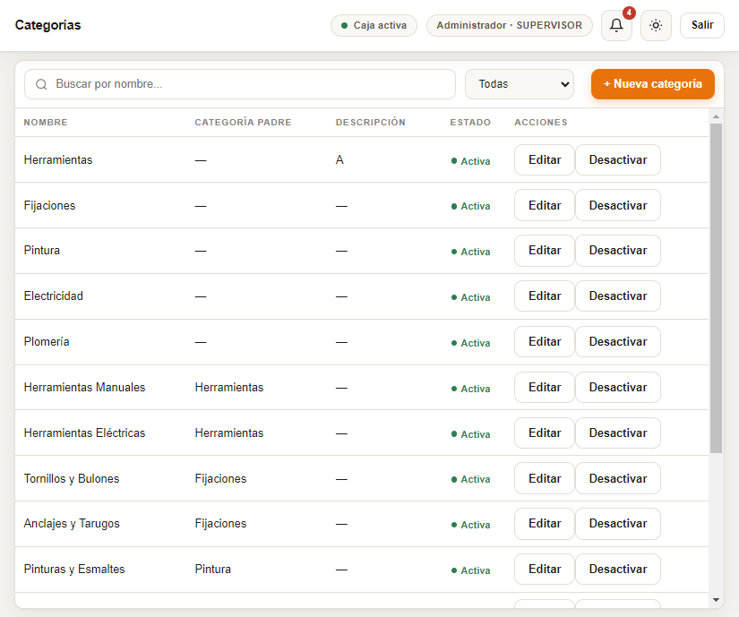
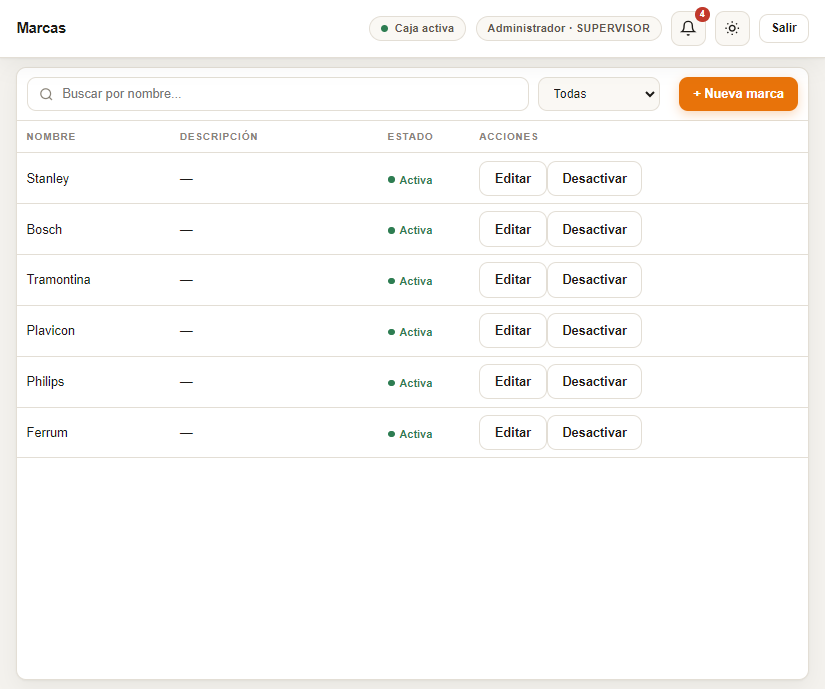
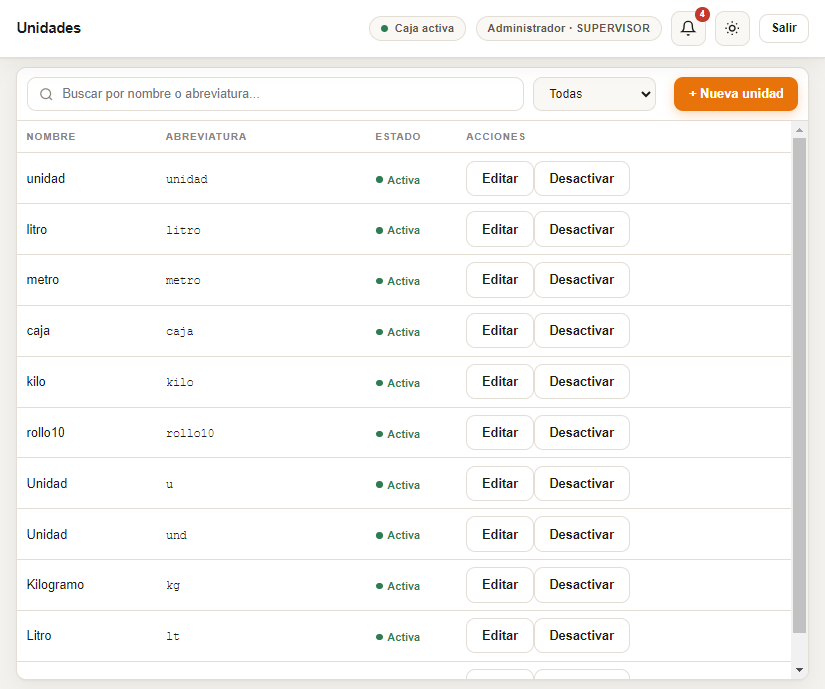
Una categoría o marca con productos activos asociados no se puede desactivar.
4 · La ficha del producto
Al abrir un producto desde el listado, ves toda su información en un solo lugar, con acciones rápidas arriba: Editar, Imprimir etiqueta, Kardex (historial de movimientos de stock), Entrada, Ajuste y Merma.
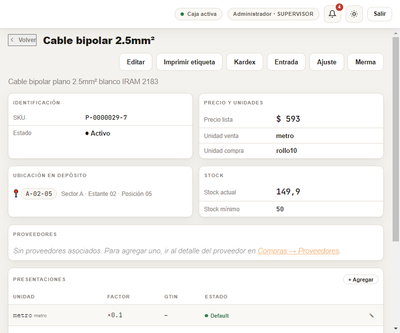
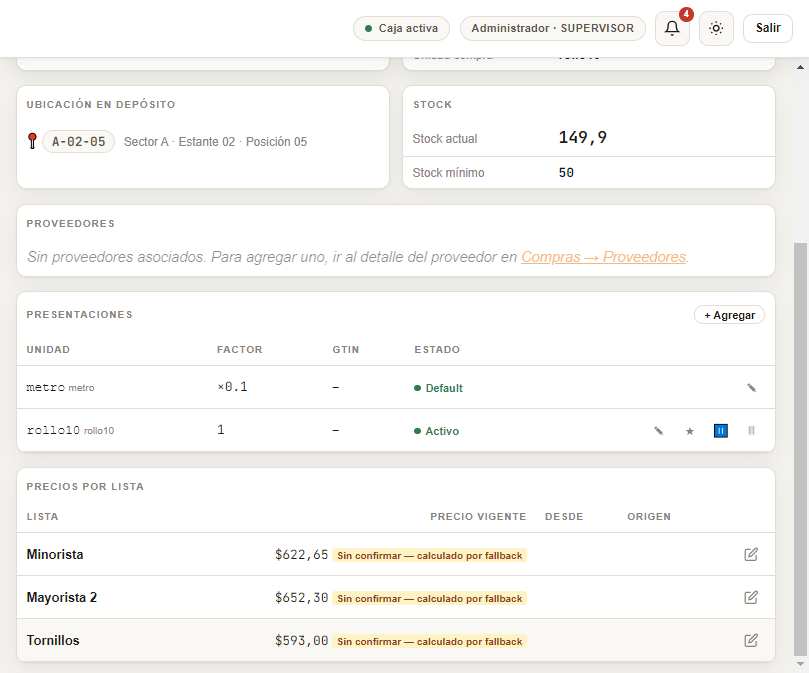
5 · Vender en más de una presentación
Un mismo producto puede tener varias presentaciones de venta (ej. metro y rollo; unidad y caja de 10) — todas comparten el mismo stock, precio base y ficha. En el POS, el vendedor elige con cuál vender cada línea.
En la ficha, sección Presentaciones → + Agregar
Elegí la unidad y el factor a stock
El factor dice cuánto vale una unidad de esa presentación, medido en la unidad de stock del producto (ej. si el stock es en metros y la presentación es “rollo de 100 m”, el factor es 100).
GTIN/EAN opcional
Si esa presentación tiene su propio código de barras (ej. el de la caja o el bulto), lo cargás acá para escanearla directo en el POS.
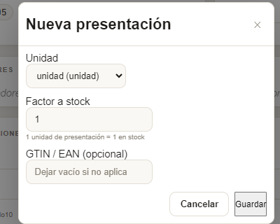
¿Vender por metro y por rollo? Hay una guía dedicada
Si tu caso es justamente ese — un producto que se compra por rollo/caja/paquete y se vende tanto por unidad suelta como por el paquete entero — existe una guía específica con el ejemplo completo (cable de 100 m) y el error más común (dejar el factor en 1).
6 · Precios por lista
La ficha muestra, de un vistazo, el precio vigente del producto en cada lista de precios (Minorista, Mayorista, etc.), de dónde salió ese precio, y desde cuándo. La lógica completa de listas, márgenes y lotes de precios está en la guía dedicada al módulo Precios / Costos.
7 · Imprimir etiquetas
Desde Configuración → Etiquetas: elegís el formato de hoja y el tipo de código (QR o código de barras), marcás los productos con el checkbox de cada fila, y usás Vista previa, Exportar PDF o Imprimir.
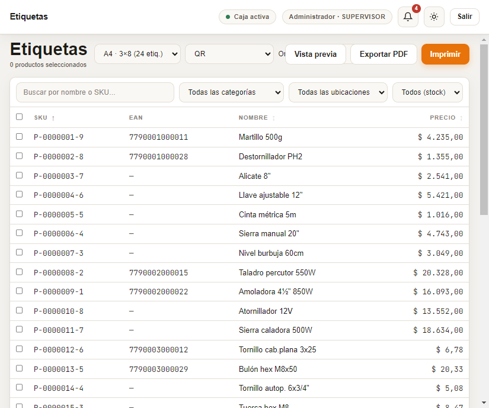
8 · Ubicaciones
Desde Configuración → Ubicaciones: el catálogo de posiciones físicas del depósito, con un código canónico armado a partir de sector + estante + posición (los tres obligatorios). El código se calcula solo — recorta ceros a la izquierda en los segmentos numéricos y pasa todo a mayúsculas, así que b, 03, 05 se guarda como B-3-5.
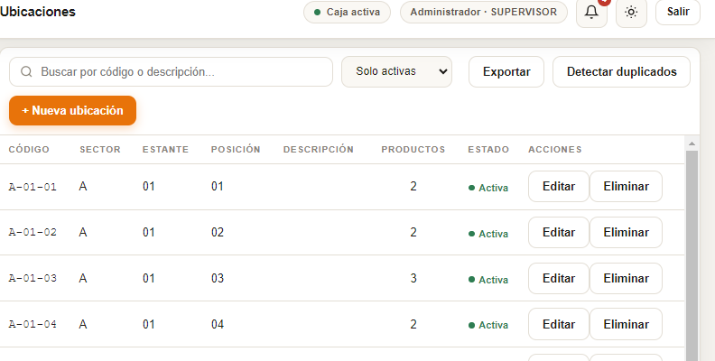
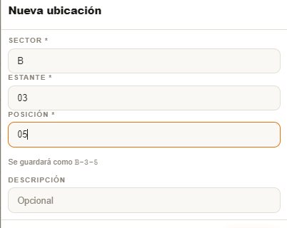
Eliminar una ubicación con productos
Si la ubicación tiene productos asignados, borrarla exige elegir a dónde reasignarlos primero (a otra ubicación, o dejarlos sin ubicación) — no se puede eliminar "en el aire".
El botón "Detectar duplicados" encuentra ubicaciones que canonicalizan al mismo código (por ejemplo, cargadas antes de que existiera la regla de canonicalización) y las fusiona de un clic, reasignando los productos de las duplicadas a la que se conserva.
9 · Sinónimos de búsqueda
Desde Configuración → Sinónimos: grupos de términos equivalentes para que el buscador del POS y del catálogo encuentre un producto sin importar qué palabra usó el cliente o el vendedor.
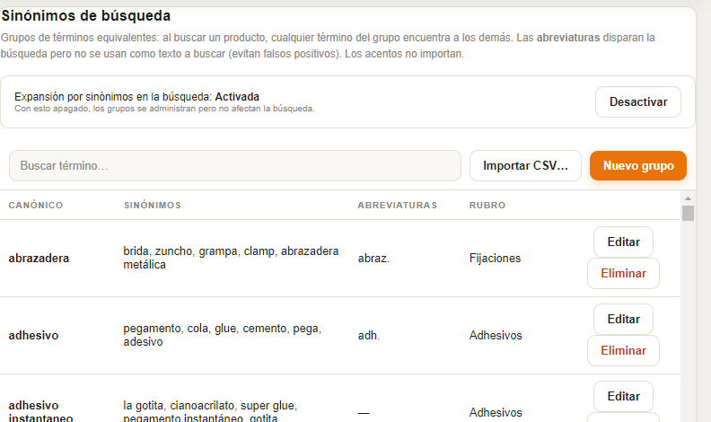
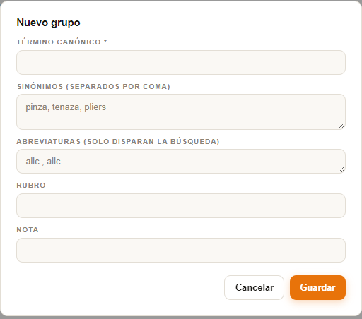
| Campo | Qué hace |
|---|---|
| Sinónimos | Términos completos que también se pueden usar como texto a buscar — equivalentes reales del canónico. |
| Abreviaturas | Disparan la búsqueda pero no aparecen como resultado de texto — evita falsos positivos con abreviaturas muy cortas o ambiguas. |
Los grupos existen aunque la búsqueda por sinónimos esté apagada
El interruptor de arriba de la pantalla ("Activada"/"Desactivada") controla si el buscador usa los grupos o no — pero podés seguir dándolos de alta, editarlos e importarlos por CSV con el interruptor apagado; simplemente no van a afectar los resultados de búsqueda hasta que lo actives.
10 · Importar datos en masa
En Configuración → Importar datos (requiere permiso de administración), un asistente de tres pasos para cargar por CSV en lote: Productos, Clientes, Proveedores, Ubicaciones o Stock inicial — una entidad a la vez.
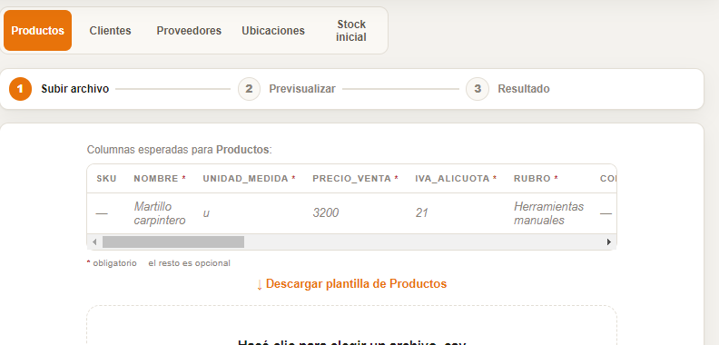
Subir archivo
Descargás la plantilla de la entidad elegida (ya trae las columnas correctas) o subís tu propio CSV.
Previsualizar
Cada fila queda clasificada como ✓ Nuevo, ↻ Actualiza (ya existe y se va a pisar) o ✕ Error, filtrable por estado. Se puede corregir una fila puntual antes de confirmar.
Resultado
Resumen de cuántas filas se crearon, actualizaron u omitieron.
Las filas con error se omiten automáticamente — no frenan la importación del resto. Si falta una columna obligatoria completa (no una celda puntual), el asistente avisa antes de procesar en vez de repetir el mismo error fila por fila.
11 · Diagrama: de la ficha a la venta
12 · Dudas frecuentes
¿Puedo elegir yo el SKU de un producto?
P-NNNNNNN-D) para garantizar que sea único. Es un código interno, opaco — no codifica categoría, proveedor ni marca.¿Qué diferencia hay entre el SKU y el código QR de la etiqueta?
¿Se puede borrar un producto?
¿Puedo dejar un producto sin categoría?
Agregué una presentación pero en el POS sigue vendiendo como antes. ¿Por qué?
¿El código de barras del producto y el de una presentación pueden ser distintos?
¿Importar un CSV de productos puede pisar precios o stock por error?
¿Tengo que activar la búsqueda por sinónimos para poder cargar los grupos?
Stock — Guía paso a paso
Cómo cargar mercadería que entra, ajustar el stock después de un conteo físico, registrar una rotura, y leer el historial completo de cada producto — con diagramas y capturas reales.
0 · Cómo funciona (todo cambio es un movimiento)
El stock de un producto nunca se edita a mano. Cada vez que cambia — por una venta, una entrada de mercadería, un conteo físico o una rotura — el sistema genera un movimiento de stock, y ese movimiento queda guardado para siempre en el Kardex del producto. Así siempre podés reconstruir por qué el stock de algo es el que es.
1 · Vista general de Stock
La pantalla Stock te da un panorama de todo el catálogo de un vistazo: cuántos productos están con stock OK, bajo mínimo o sin stock, con filtros por SKU, nombre y estado. Desde cada fila podés hacer las mismas acciones (entrada, editar, merma, kardex) sin entrar a la ficha completa del producto.
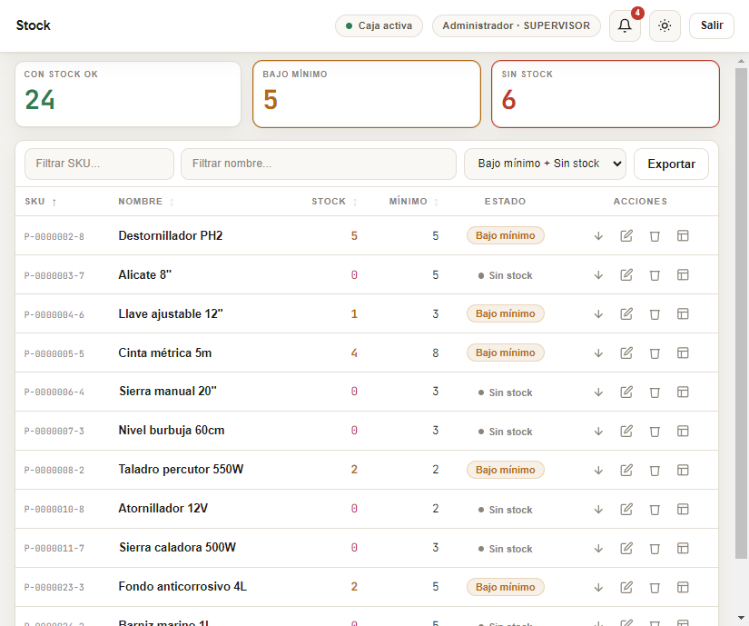
2 · Entrada de stock
Para cargar mercadería que entró sin pasar por el circuito de compras (o para la carga inicial de un producto nuevo). Se hace desde la ficha del producto, botón Entrada.
Cargá la cantidad a ingresar
Ves en vivo cómo queda el stock (actual → nuevo).
Costo unitario (opcional)
Si lo cargás, el sistema recalcula el costo promedio ponderado del producto. Si lo dejás en blanco, el costo promedio no se toca.
Confirmá la entrada
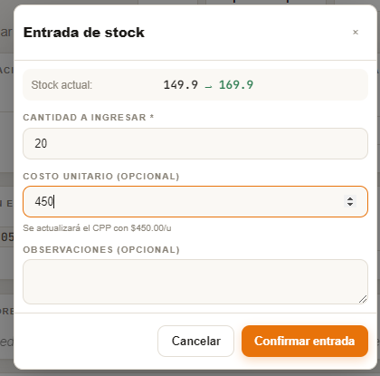
3 · Ajuste (conteo físico)
Para corregir el stock del sistema contra lo que realmente hay en el estante, después de un conteo.
Cargá la cantidad contada (real)
No la diferencia — el número total que contaste. El sistema calcula solo la diferencia contra el stock actual.
Observaciones — obligatorias
A diferencia de la entrada, acá el motivo del ajuste es obligatorio: queda como parte del historial permanente.
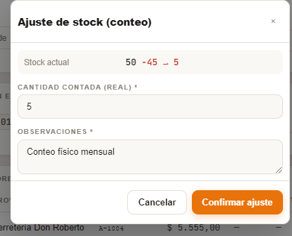
4 · Merma / rotura
Para dar de baja mercadería perdida, vencida o rota — a diferencia del ajuste, acá cargás cuánto se perdió, no el total nuevo.
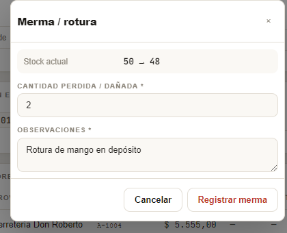
⚠️ No te deja dejar el stock en negativo
Si la cantidad que cargás como pérdida es mayor al stock disponible, el sistema no te deja confirmar la merma.
5 · Kardex — historial completo
El Kardex es la bitácora completa de un producto: cada entrada, salida, ajuste y merma, con fecha, motivo, cantidad, el saldo resultante y el costo unitario cuando corresponde. Se accede desde el botón Kardex en la ficha del producto, y se puede filtrar por tipo, motivo y rango de fechas.
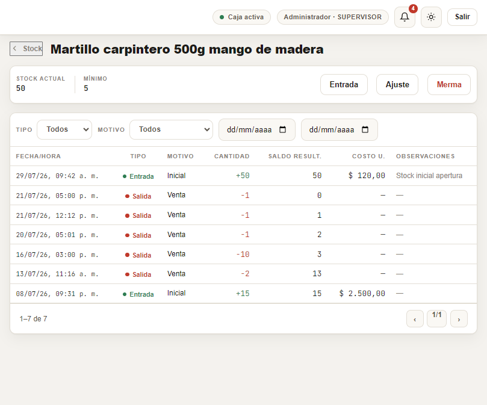
Los movimientos son inmutables: no se editan ni se borran. Si algo estuvo mal, se corrige con un nuevo movimiento (un ajuste), nunca modificando uno viejo.
6 · Costo promedio ponderado
Cada vez que entra mercadería con costo cargado, el sistema recalcula el costo promedio ponderado (CPP) del producto:
Es el mismo criterio contable de siempre: si tenías 10 unidades a $100 y entran 10 más a $140, el nuevo costo promedio no es ni $100 ni $140, sino (10×100 + 10×140) / 20 = $120. Este costo es el que se usa como base para calcular márgenes cuando una lista de precios está configurada en modo “margen sobre costo” (ver la guía de Precios / Costos).
7 · Diagrama: tipos y motivos de movimiento
8 · Dudas frecuentes
¿Cuál es la diferencia entre Ajuste y Merma?
¿Por qué en Ajuste y Merma las observaciones son obligatorias, y en Entrada no?
Si no cargo el costo unitario en una Entrada, ¿qué pasa con el costo promedio?
¿Puedo dejar el stock en negativo con una Merma?
¿Puedo editar o borrar un movimiento que cargué mal?
¿De dónde salen los movimientos de tipo "Venta"?
Abastecimiento — Guía paso a paso
Cómo dar de alta proveedores, marcar cuál es el preferido de cada producto, armar y emitir una orden de compra, recibir la mercadería, y dejar que el sistema te sugiera qué reponer — con diagramas y capturas reales.
0 · Cómo funciona
Cada producto puede comprarse a varios proveedores distintos, cada uno con su propio costo y código. De todos ellos, uno se marca como preferido — es el que el sistema usa para calcular márgenes y para armar sugerencias de compra. Una orden de compra (OC) nace en borrador (podés editar los ítems libremente), pasa a emitida (ya no se puede tocar), y se cierra recibiendo la mercadería — total o parcialmente.
1 · Proveedores
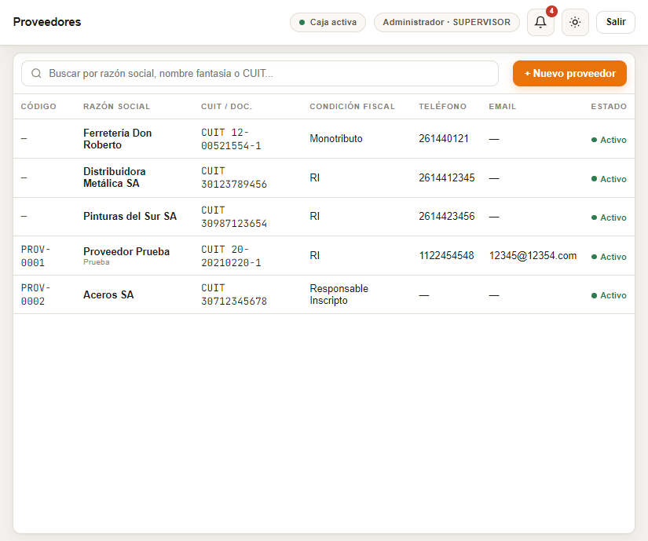
El alta de un proveedor tiene tres bloques: identificación fiscal (CUIT, razón social, condición fiscal — el código de proveedor lo asigna el sistema solo), contacto, y condiciones comerciales.
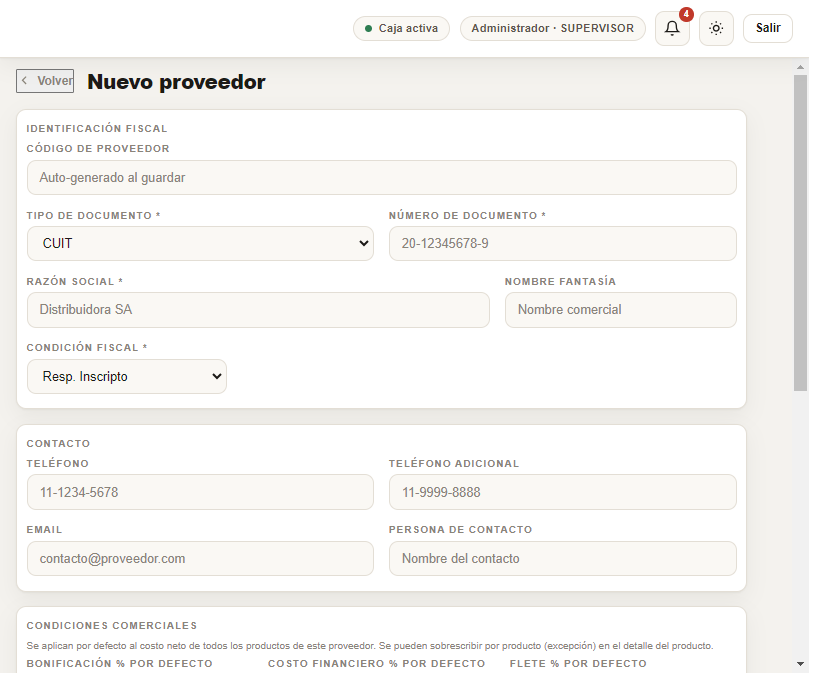
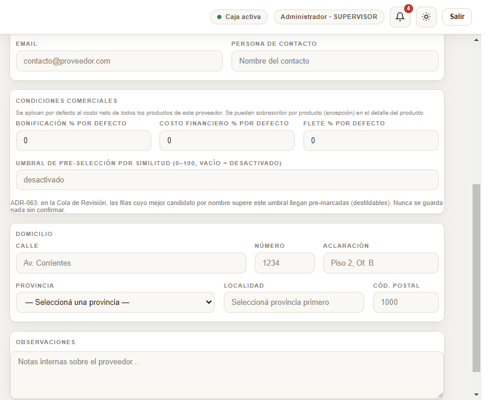
Bonificación, costo financiero y flete por defecto
Estos tres porcentajes se aplican a todos los productos de este proveedor a la hora de calcular el costo neto (costo bruto ± bonificación ± financiero ± flete). Si un producto puntual necesita otro trato, se puede sobrescribir por excepción desde su propia ficha — sin tocar el default del proveedor.
2 · El proveedor "preferido"
Desde la ficha del proveedor, pestaña Productos, ves todo lo que le comprás: costo, costo neto, código de ese proveedor, y si es el preferido para ese producto.
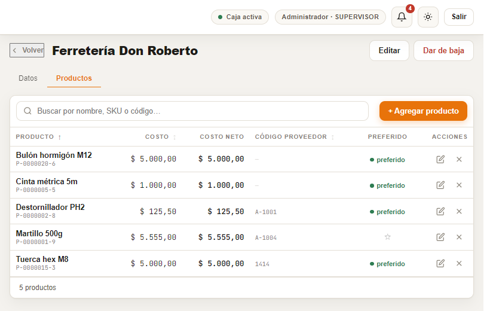
⚠️ Por qué importa el preferido
El costo del proveedor preferido es el que alimenta el cálculo de márgenes (listas de precios en modo "margen sobre costo") y las cantidades de la OC Sugerida. Un producto sin preferido asignado queda fuera de esos cálculos hasta que se lo asignes.
3 · Crear una orden de compra
Elegí el proveedor
Botón + Nueva OC manual. Observaciones opcionales.
Agregá los ítems
Producto, cantidad, costo y % de IVA. La OC nace en borrador y podés agregar tantos ítems como necesites.
4 · Emitir la OC
Mientras la OC está en borrador podés seguir agregando o sacando ítems. Al presionar Emitir OC, el sistema te avisa que después de esto ya no vas a poder modificar los ítems.
5 · Recibir mercadería
Al recibir, el sistema te muestra solo lo pendiente (pedido menos lo ya recibido), con la cantidad a recibir precargada al máximo posible — la podés bajar si llegó menos.
¿Y si llega menos de lo pedido?
Registrás la cantidad que efectivamente llegó. La OC queda en recibida parcial y el botón "Recibir mercadería" sigue disponible para completar el resto cuando llegue.
6 · OC Sugerida — reposición automática
En vez de revisar producto por producto, OC Sugerida arma la lista sola: junta todos los productos bajo su stock mínimo, calcula cuánto falta, y los agrupa por proveedor preferido.
Revisá cada grupo
Mínimo, faltante y cantidad sugerida por producto, con el costo del proveedor preferido.
Crear OC y editar
Genera de una la orden de compra completa con todos los ítems del grupo, en borrador, lista para ajustar y emitir.
Los productos sin proveedor preferido quedan aparte
Con un enlace directo Asignar proveedor para resolverlo ahí mismo.
7 · Diagrama: ciclo de vida de una OC
8 · Dudas frecuentes
¿Puedo editar los ítems de una OC ya emitida?
¿Qué diferencia hay entre "OC manual" y "OC sugerida"?
Un producto no aparece agrupado en ningún proveedor en OC Sugerida. ¿Por qué?
¿Se puede recibir más cantidad de la que se pidió?
¿La bonificación/costo financiero/flete del proveedor se puede cambiar para un producto puntual?
¿Anular una OC afecta el stock?
Precios / Costos — Guía paso a paso
Cómo se importan costos y el catálogo del proveedor, cómo se revisan, y el proceso completo de Listas de precios — con diagramas de flujo y capturas reales.
0 · Cómo funciona (de dónde sale un precio)
Un precio de venta no sale de un solo lado: se arma encadenando costo → costo neto → margen → precio publicado → precio que lee el mostrador.
| Pantalla | Para qué sirve |
|---|---|
| Importar costos | Actualiza el costo de productos ya vinculados a un proveedor, desde un archivo. |
| Importar Catálogo del Proveedor | Establece el vínculo producto↔proveedor (qué vende y con qué código). |
| Revisión de Costos y Catálogo | Resuelve a mano lo que no matcheó y muestra el historial de importaciones. |
| Listas de precios | Listas, reglas de margen, precios vigentes, promociones, recálculos. |
| Lotes de precios | El circuito de aprobación/publicación de cambios de precio. |
1 · Importar costos
Objetivo: actualizar el costo bruto de productos que ya están vinculados a un proveedor. Asistente de 3 pasos.
Paso 1 — Archivo y proveedor
Elegís proveedor + archivo (CSV/XLSX). Hay plantilla descargable. Las
columnas se interpretan con el mapeo del proveedor (proveedor_importacion_config:
formato, delimitador, fila de encabezado, y qué columna es costo / código del proveedor / EAN / SKU).
Paso 2 — Previsualizar (nada se graba todavía)
El archivo se parsea en memoria. Cada fila se matchea solo contra productos ya vinculados a este proveedor, con la cascada:
Alcance acotado: un producto de otro proveedor no matchea aunque su EAN/SKU aparezca — así no se cargan costos cruzados por error.
| Estado | Significado |
|---|---|
| matched | Producto identificado; muestra costo anterior → nuevo. |
| sin_matchear | No se identificó → va a la Cola de Revisión. |
| error_formato | El costo no es un número válido, etc. |
Extras: advertencia cruzada (no bloquea) si el código del proveedor del archivo difiere del guardado; detección de duplicados en el archivo (aplica el último); edición inline, filtros y buscador "Consultar productos". El preview es persistente (sobrevive navegar y volver).
Paso 3 — Aplicado (Confirmar)
Recién al Confirmar se persiste todo: se guarda la importación (cabecera + detalle por fila), se actualiza el costo de las filas matched, y se generan lotes de precios por evento de costo para las listas en modo margen sobre costo (quedan para revisar y publicar — ver §5). Las filas sin matchear pasan a la Cola de Revisión.
2 · Importar Catálogo del Proveedor
Objetivo: establecer el vínculo producto↔proveedor (qué vende y con qué código). El matching es global (todo el catálogo), no acotado al proveedor. Mismo asistente de 3 pasos.
| Acción | Significado |
|---|---|
| Crear vínculo | El producto existe y aún no está vinculado a este proveedor. |
| Actualizar | Ya estaba vinculado; actualiza código (y costo si vino). |
| sin_matchear | El producto no existe. No se crean productos. |
| error | Dato inválido (p. ej. costo no numérico). |
Para las filas sin matchear se sugieren candidatos por similitud de nombre. El
costo es opcional. Al Confirmar: upsert de producto_proveedor;
el preferido se asigna solo si el producto no tenía ninguno (nunca pisa). Resultado con
contadores creados / actualizados / sin identificar / errores / preferidos asignados y tabla de impactados.
3 · Revisión de Costos y Catálogo
Pantalla unificada para lo que quedó "colgado" de las importaciones.
3.1 · Cola de Revisión
Filas sin asignar (las sin_matchear de costos y catálogo). Por cada una: Resolver (asignar a un producto a mano o por candidato de similitud), Editar, o Descartar.
3.2 · Historial de importaciones
Todas las importaciones (costos y catálogo) con cabecera —proveedor, archivo, fecha, totales, identificados / rechazados / pendientes, y estado pendiente confirmado cancelado—, ordenable y con detalle fila por fila (filtros). Es la auditoría: qué se cargó, cuándo y con qué resultado.
4 · Proceso completo de Listas de precios
Acá vive el precio de venta. El modelo separa la definición (listas + reglas), el valor (precios vigentes historizados) y el flujo de cambio (lotes).
4.1 · Listas y su modo de cálculo
| Modo | Cómo calcula |
|---|---|
| Margen sobre costo | Reglas de margen sobre el costo neto del preferido. |
| % sobre lista (default) | Ajuste porcentual sobre el precio base del producto. |
| Manual | Precio cargado a mano. |
La lista predeterminada es la que usa el POS para el consumidor final. Un
cliente puede tener su propia lista (cliente.lista_precio_id).
4.2 · Reglas de margen (solo modo margen sobre costo)
Una sola regla aplica por producto. Precio propuesto = costo_neto × (1 + margen/100), con redondeo comercial.
4.3 · Precios vigentes
Es lista_precio_valor: precio absoluto por producto y lista, historizado
(SCD tipo 2: el vigente tiene fecha_hasta = null; al cambiar se cierra el viejo y
se inserta el nuevo). Se puede ver, filtrar (nombre/SKU/EAN) y ordenar.
Desde acá se dispara el Recálculo masivo y se ven los cambios programados (scheduler).
4.4 · Promociones
Precio temporal que pisa al vigente mientras está activa (máxima prioridad al resolver).
4.5 · Lotes de precios (el circuito de cambio)
- Crear: por producto calcula costo neto del preferido × regla → precio propuesto, lo compara con el vigente y valida. Queda validado o validacion_fallida. Errores típicos: sin preferido/sin costo, precio bajo el costo, margen fuera de regla. Advertencia: variación mayor al umbral.
- Re-validar: reejecuta el cálculo contra el estado actual (recupera filas que arreglaste). Respeta las excluidas.
- Excluir errores / fila: saca del lote lo que no se puede aprobar.
- Aprobar (permiso de Supervisor) → aprobado.
- Publicar: escribe los precios en
lista_precio_valorde la lista del lote. Acá cambia el precio. - Revertir: genera un lote ROLLBACK con los precios previos (nunca borra historia).
4.6 · Cómo se consume el precio (POS / Presupuestos)
5 · Nota: "re-validé y publiqué un lote, pero el precio no cambió"
⚠️ Qué pasó (no es un error del lote)
Observación: al re-validar el lote funcionó, pero lo que cambió fue el costo del producto para ese proveedor, no el precio de venta.
- El lote publica en la lista del lote. Si esa lista no es la predeterminada, el POS (que vende de la predeterminada) no ve ese precio. Se actualizó… en otra lista.
- La pantalla del Producto muestra el campo legacy
producto.precio_venta_lista, que ningún lote actualiza. Por eso "Precio lista" no se mueve aunque publiques. - El costo sí cambió porque lo editaste y Re-validar lo tomó para recalcular. Eso es correcto; lo que no aterriza en el mostrador es el precio publicado, por el punto 1.
Para que un lote impacte la venta: hacelo sobre la lista predeterminada (la que vende el mostrador), o asigná esa lista al cliente. Verificalo en Listas de precios: mirá cuál tiene el chip "predeterminada" y que el lote esté sobre esa.
Deuda conocida (fuera de esta guía)
Cerrar del todo el circuito —que la pantalla de Producto muestre el precio vigente del motor en vez del campo legacy, y/o definir cómo se relaciona un lote con la predeterminada— es arquitectura del motor v2 a resolver con su propio ADR.
6 · Dudas frecuentes
¿Cuál es la diferencia entre "Importar costos" e "Importar Catálogo del Proveedor"?
Si un producto tiene promoción activa Y está en una lista con precio vigente, ¿cuál gana?
Un lote quedó en "Validación fallida", ¿cómo lo destrabo?
¿Qué regla de margen aplica si un producto tiene reglas por Marca y por Rubro a la vez?
¿Cuándo entra en juego el precio "Fallback (legacy)"?
lista_precio_valor. Ahí el sistema recurre al campo histórico precio_venta_lista del producto, ajustado por el porcentaje de la lista — es la salida de emergencia, no el camino normal.¿"Publicar" un lote y "Aprobar" un lote son lo mismo?
lista_precio_valor — recién ahí cambia lo que ve el mostrador. Un lote aprobado y no publicado todavía no tocó ningún precio.Me equivoqué al publicar un lote, ¿puedo deshacerlo?
Glosario — Costo bruto: lo que factura el proveedor. Costo neto: bruto ± bonif/flete/fin (el del preferido alimenta el margen). lista_precio_valor: precio vigente historizado por producto y lista. Lote: un cambio de precios en revisión. Lista predeterminada: la que usa el POS para el consumidor final.
Reportes y Dashboard — Guía paso a paso
Cómo leer el panorama del negocio por período — ventas, productos, caja, clientes y proveedores — y cómo exportar el detalle de ventas para análisis externo.
0 · Cómo funciona
El Dashboard tiene 6 pestañas — cada una mira el negocio desde un ángulo distinto, pero todas comparten el mismo selector de período arriba. Es exclusivo del rol Supervisor. Aparte, en Reportes → Ventas hay una pantalla independiente para buscar y exportar el detalle fila por fila de cada venta — el Dashboard te da la foto general, esa pantalla te da el dato puntual.
1 · El selector de período
Compartido por las 6 pestañas: Hoy, Semana, Mes, Trimestre o Personalizado (rango de fechas a elección). Cambiarlo recalcula todos los números y gráficos de la pestaña activa.
2 · Resumen
La foto del día: ventas de hoy (con atajo a semana/mes), alertas de stock (sin stock / bajo mínimo / sin movimiento), y el estado de la caja del turno con los últimos arqueos.
3 · Ventas
Total, cantidad de ventas, ticket promedio e IVA del período, filtrable por rubro. Abajo: evolución día a día (comparada contra el período anterior), un mapa de calor de ventas por hora y día de la semana, ranking de vendedores y top de productos.
4 · Productos
Mismo bloque de alertas de stock, más dos herramientas de análisis: curva ABC (clasifica productos por cuánto explican del total facturado — A son los que más venden, C los que menos) y margen por categoría.
5 · Caja
Ingresos, egresos y recargos totales del período, movimientos agrupados por turno, y el desglose por medio de pago.
6 · Clientes
Deuda total y deuda vencida de todas las cuentas corrientes, clientes nuevos e inactivos del período, y un ranking de clientes por facturación.
7 · Proveedores
Órdenes de compra pendientes de recepción, sugerencias de reposición sin resolver, y ranking de proveedores por gasto del período.
8 · Reporte de Ventas (detalle exportable)
Pantalla independiente en Reportes → Ventas, para cuando necesitás el detalle en vez del resumen: cada venta como una fila, filtrable por fecha, cliente, producto, categoría, vendedor y medio de pago, con botón Exportar.
9 · Dudas frecuentes
¿Por qué no veo el Dashboard en el menú?
¿Qué diferencia hay entre la pestaña "Ventas" del Dashboard y "Reportes → Ventas"?
¿Qué significa la curva ABC?
¿Por qué la pestaña Proveedores no muestra cuánto le debo a cada uno?
¿Los números cambian si cambio el período mientras estoy en otra pestaña?
Agenda — Guía paso a paso
Cómo organizar tareas y recordatorios del local: crear eventos sueltos, armar rutinas que se repiten solas, y seguir los avisos que el sistema manda a quien corresponda.
0 · Cómo funciona
La Agenda tiene tres pantallas que se alimentan una a la otra: una Rutina (opcional) genera Eventos automáticamente según una frecuencia; cada Evento, al enviarse, genera uno o más Avisos (en la app y/o por email) para el destinatario que corresponda. También podés saltear la Rutina y cargar un Evento suelto a mano.
Módulo detrás de un interruptor de configuración (activado en esta instalación). No tiene permiso propio en el sistema de roles: cualquier usuario con sesión iniciada —Operador o Supervisor— puede usar las tres pantallas.
1 · Eventos — las tres zonas
La pantalla principal (Agenda → Eventos) agrupa todo lo pendiente en tres zonas según la fecha: Atrasadas (venció y sigue sin resolver), Hoy y Próximos. Por defecto solo se listan los eventos activos; el check "Incluir completadas/descartadas" suma también el historial cerrado.
Cada fila puede filtrarse por origen: Manual (cargado a mano) o Rutina (generado por una rutina) son los que vas a ver en el uso normal. El filtro también contempla orígenes reservados para integraciones futuras del propio sistema (orden de compra, recepción, stock bajo mínimo, cierre de caja) que hoy todavía no generan eventos automáticamente.
Cuando un evento sí tiene un origen navegable (por ejemplo, quedó enlazado a una orden de compra o a un proveedor), aparece el botón "Abrir origen" que te lleva directo a esa pantalla.
2 · Crear un evento manual
"+ Nuevo evento"
Arriba a la izquierda, en Eventos.
Título y descripción opcional
Lo que necesitás recordar — sin campos de destinatario ni canal: un evento manual queda visible en la bandeja de Eventos, no dispara un aviso aparte.
Fecha
Fecha y hora en que el evento debe aparecer como vencido si nadie lo resuelve antes.
3 · Completar, posponer y descartar
Cada fila tiene tres acciones posibles, sin importar de dónde vino el evento:
| Acción | Qué hace |
|---|---|
| Completar | Marca el evento como resuelto de inmediato — un solo clic, sin modal. |
| Posponer | Abre un modal para elegir una nueva fecha (y una nota opcional) sin cerrar el evento. |
| Descartar | Pide confirmación y saca el evento del listado activo sin marcarlo como completado. |
Posponer no borra el vencimiento original
El evento queda con estado pospuesto y una nueva fecha objetivo; si esa nueva fecha también se pasa sin resolverse, vuelve a aparecer en "Atrasadas" como cualquier otro pendiente.
4 · Rutinas — generadores recurrentes
Una Rutina no es una tarea en sí: es una regla que genera Eventos solos, con la frecuencia y el destinatario que definiste. Sirve para lo que se repite siempre igual — un conteo físico semanal, un recordatorio mensual de pago, etc. — sin tener que cargarlo a mano cada vez.
Desde el listado podés Editar, Pausar (la deja de disparar sin borrarla — distinto de eliminarla) o Eliminar una rutina. Si el próximo disparo queda vacío, la rutina ya agotó su rango de fechas y no va a volver a generar eventos.
5 · Crear una rutina
"+ Nueva rutina"
Nombre y descripción opcional.
Frecuencia
Única (una sola vez), Diaria, Semanal, Mensual o Cada N días. Semanal y Mensual también admiten un intervalo ("cada cuántas semanas/meses"), no solo "cada N días".
Detalle según frecuencia
Semanal pide el día de la semana; Mensual pide el día del mes (31 se ajusta automáticamente al último día real de cada mes); Cada N días pide el intervalo en días. Todas piden la hora del disparo.
Desde / Hasta
Rango de vigencia. "Hasta" es opcional: sin fecha de fin, la rutina se repite indefinidamente.
Responsable
Un usuario puntual o un rol completo (por ejemplo, "todos los Supervisores").
Canales
"En la app" y/o "Email" — al menos uno debe quedar tildado para que el aviso llegue a alguna parte. El canal Email depende de que el SMTP esté configurado (ver la guía de Configuración/Sistema).
6 · Avisos — la bandeja de notificaciones
Agenda → Avisos es la bandeja de salida: cada vez que un evento dispara una notificación, queda un registro acá por canal (in-app, email) y por destinatario, con su propio estado (pendiente, enviado, fallido, descartado). Se puede filtrar por texto, canal y estado.
Un aviso "fallido" reintenta solo
Si el envío por email falla (por ejemplo, el SMTP está mal configurado), el sistema reintenta con backoff automático antes de dejarlo definitivamente en fallido. No hace falta reenviarlo a mano.
7 · Dudas frecuentes
¿Cuál es la diferencia entre "Descartar" y "Completar"?
Si pauso una rutina, ¿qué pasa con los eventos que ya generó?
Puse "31" como día del mes, ¿se rompe en febrero?
¿Un evento manual también genera un aviso por email?
¿Por qué el filtro "Origen" tiene opciones que nunca veo en la lista (orden de compra, recepción, bajo mínimo, cierre de caja)?
No veo "Agenda" en el menú, ¿por qué?
Configuración / Sistema — Guía paso a paso
Cómo administrar tu cuenta, dar de alta y baja usuarios, configurar el envío de emails, programar backups y restaurar desde uno, y cargar/vaciar el catálogo de demostración.
0 · Cómo funciona
El sidebar tiene dos grupos separados que a veces se confunden: Configuración (catálogo auxiliar — Etiquetas, Categorías, Marcas, Unidades, Ubicaciones, Sinónimos, Transportistas, Importar datos) y Sistema (administración de la instalación en sí). Esta guía cubre solo el grupo Sistema: Mi cuenta, Usuarios, Backup/Restore, Email/SMTP y Datos demo. El resto de Configuración ya está en la guía de Catálogo/Productos y en la de Precios/Costos.
Casi todas las pantallas de Sistema requieren permisos de administración (en la práctica, rol Supervisor): Usuarios, Backup/Restore, Email/SMTP y Datos demo. La única excepción es Mi cuenta, disponible para cualquier usuario logueado — cada quien administra su propio perfil ahí, sin necesitar que un Supervisor lo edite.
1 · Mi cuenta
Dos bloques independientes: datos personales (nombre completo, email) y cambio de contraseña. Para cambiar tu propia contraseña necesitás escribir la actual — a diferencia de cuando un Supervisor le cambia la contraseña a otro usuario desde Usuarios, donde no hace falta saber la anterior.
2 · Usuarios
Alta, edición, cambio de contraseña y baja lógica (desactivar/reactivar) de usuarios — requiere el permiso de administración de usuarios.
admin no tiene botones de editar/desactivar: es intocable desde esta pantalla.No se puede desactivar al último Supervisor activo
Es una regla dura del sistema, no solo una confirmación: si intentás desactivar al único Supervisor que queda activo, la acción se rechaza — así la instalación nunca se queda sin nadie que pueda administrarla.
3 · Backups
Backup/Restore junta tres cosas: la configuración del backup automático, el botón para crear uno manual, y el listado de los que ya existen en la carpeta destino.
| Campo | Qué controla |
|---|---|
| Carpeta destino | Podés apuntarla a una carpeta de Google Drive Desktop o OneDrive para tener copia fuera de la máquina, sin configurar nada extra. |
| Backup automático al cerrar caja | Dispara un backup solo cada vez que se cierra un turno de caja — no es un cronómetro fijo. |
| Retención (días) | Backups más viejos que este número se rotan (se eliminan) automáticamente. |
| Incluir certificados AFIP | Apagado por defecto. Si lo activás, el backup se cifra con contraseña porque va a contener credenciales fiscales. |
Cada fila del listado muestra fecha, si fue manual o auto, tamaño, si incluye certificados y si está cifrado — con acción para eliminarlo.
4 · Restaurar desde un backup
El botón "Restaurar desde archivo…" abre un wizard de varios pasos, a propósito lento: restaurar reemplaza toda la base de datos actual, así que el flujo está diseñado para que sea difícil hacerlo por error.
.fbk (y su contraseña, solo si está cifrado).Validar backup
Se lee el archivo y se muestra si es compatible directamente o si necesita migraciones automáticas por ser de una versión anterior.
Comparar
Tabla por tabla: cuántas filas tiene la base actual contra cuántas trae el backup — para detectar a ojo si es el archivo que realmente querías.
Confirmar
Hay que escribir la palabra RESTAURAR a mano para habilitar el botón final. Antes de ejecutar, el sistema crea automáticamente un backup de seguridad de la base actual.
Ejecutar
La aplicación se reinicia sola al terminar. Al volver a abrir, ves un resumen de filas "antes" y "después" por tabla.
Es una operación destructiva e irreversible en el momento
Restaurar reemplaza todos los datos actuales por los del backup. El respaldo de seguridad automático te da una salida si te arrepentís después, pero mientras se ejecuta no hay vuelta atrás — por eso el wizard exige escribir RESTAURAR literal antes de dejarte avanzar.
5 · Email / SMTP
Acá se configura el servidor de correo saliente que usa toda la app para mandar emails — hoy, principalmente los avisos de Agenda (ver la guía de Agenda) y el aviso de cierre de caja.
| Puerto | Conexión segura | Protocolo |
|---|---|---|
587 | Destildada | STARTTLS — el más habitual (Gmail, Outlook) |
465 | Tildada | TLS directa |
El formulario avisa solo si elegís una combinación de puerto/conexión que normalmente no funciona.
El campo "Usuario" se guarda sin cifrar
A diferencia de la contraseña (cifrada con safeStorage del sistema operativo, fuera de la base y de los backups), el Usuario viaja en texto plano dentro de parametros_sistema — y por lo tanto entra en los backups .fbk. Si por error escribís tu contraseña ahí en vez del usuario, el sistema te lo advierte antes de guardar. Casi siempre el Usuario es tu dirección de correo completa, no solo el nombre.
Gmail, Outlook y proveedores similares no aceptan la contraseña normal de la cuenta: hace falta generar una contraseña de aplicación desde la configuración de seguridad de la cuenta, con la verificación en dos pasos activada.
Al pie del formulario, el check "Avisar los cierres de caja por email" es lo que conecta esta pantalla con el aviso automático de cierre de caja: con el email apagado, el aviso igual queda en la bandeja in-app de Agenda, pero no se manda el correo.
6 · Datos demo
Carga (o vacía) un catálogo de 15 productos de muestra pensado para evaluar la app antes de operar en serio — con precio, stock y algún caso borde ya cargado.
Solo se carga sobre un catálogo vacío
"Cargar catálogo demo" se deshabilita apenas hay al menos un producto real cargado — no existe un modo de "agregar demo encima" de tu catálogo. "Vaciar catálogo demo" solo borra los productos marcados como demo, nunca los que vos cargaste.